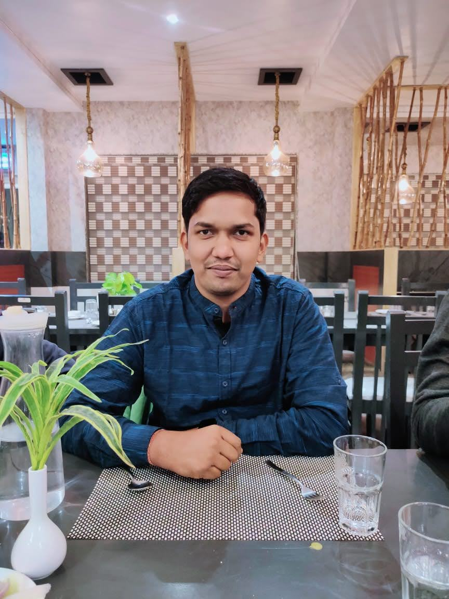

CURRICULUM VITAE
Email- samirkarn00@gmail.com 
Mob.- 8377815352
Objectives:
- Seeking to achieve a responsible position a Organsation where I could apply my knowledge with all my available resources used can be part of growth of the organsation.
| Degree |
University/Board |
Year |
Percantage/CGPA |
| B.Tech (CSE) |
Dr. APJ Abdul Kalam Technical University, Lucknow |
2019 |
67.8% |
| 12th |
Bihar School Examination Board, Patna |
2014 |
60% |
| 10th |
Central Board of Secondary Education, New Delhi |
2012 |
7.8 CGPA |
Academic Profile:
- B.Tech from Dr. A.P.J. Abdul Kalam Technical University, Lucknow in 2019.
- 12th from Bihar School Examination Board, Patna in 2014.
- 10th from Centeral Board of Secondary Education, New Delhi in 2012.
Work Exprience:
- Two years of Exprience in Teleperformance Pvt. Ltd., Gurgaon as a analyst.
- Two months Exprience in Byjus The Learning App as a Business Development Trainee.
Strengths:
- Hard Working.
- Ability to easily mingle with people.
- Easily adop culture of the organsation.
Technical Skills:
- Basic Java
- HTML 5
- CSS
- MySQL
Extra-Curriculum Activities:
- Participates in Various Sports.
- Diploma in Computer Application from AICT, Darbhanga.
- Certified from Udemy in Full Stack Web Development.
Projects:
-
Face Recognition
We Use HTML, CSS, JavaScript in the project. Also use JavaScript Framworks like React.js, Vue.js
-
Samir Kumar
This is my Simpe webpage which tells about me. I use Frontend Technologies in this like HTML, CSS, JavaScript, JQuery.
Link is Here: Samir Kumar
Social Media links:
Personal Profile:
Name : Samir Kumar
Father's Name : Mr. Girish Nandan Prasad Verma
Mother's Name : Mrs. Indramala Devi
Date of Birth : 1st April 1997
Nationality : Indian
Marital Status : Unmarried
Language Known : Hindi, English & Maithili
Declaration:
I hereby Declare that the information provided me is correct to my knowledge and the references will be shown is required.
Date: 27/06/2022
Place: Muzaffarpur, Bihar
(Samir Kumar)